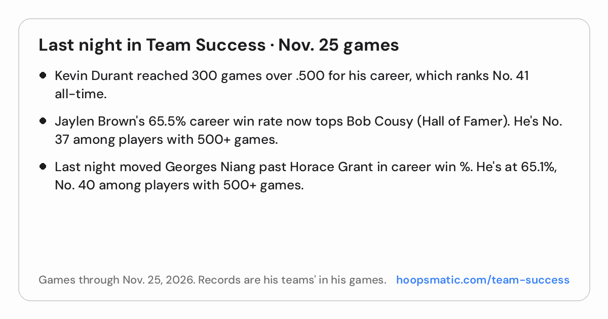

Last night in Team Success · Nov. 25 games
Nov. 26, 2026

 Jaylen Brown's 65.5% career win rate now tops Bob Cousy (Hall of Famer). He's No. 37 among players with 500+ games.
Jaylen Brown's 65.5% career win rate now tops Bob Cousy (Hall of Famer). He's No. 37 among players with 500+ games. Last night moved Georges Niang past Horace Grant in career win %. He's at 65.1%, No. 40 among players with 500+ games.
Last night moved Georges Niang past Horace Grant in career win %. He's at 65.1%, No. 40 among players with 500+ games. Draymond Green climbed past Sam Jones (Hall of Famer) and Avery Johnson on the career wins list. He's now No. 93 with 626.
Draymond Green climbed past Sam Jones (Hall of Famer) and Avery Johnson on the career wins list. He's now No. 93 with 626. Fred VanVleet climbed to No. 99 in career win % (62.0%) among players with 500+ games, ahead of Will Perdue.
Fred VanVleet climbed to No. 99 in career win % (62.0%) among players with 500+ games, ahead of Will Perdue. The Sacramento Kings have never been here before. They're 2–16 through 18 games, their worst start in 79 seasons.
The Sacramento Kings have never been here before. They're 2–16 through 18 games, their worst start in 79 seasons. The Milwaukee Bucks are 2–17, the worst start through 19 games in their 59 seasons.
The Milwaukee Bucks are 2–17, the worst start through 19 games in their 59 seasons. The Philadelphia 76ers are 15–4, their best start through 19 games since 2002-03 (15–4).
The Philadelphia 76ers are 15–4, their best start through 19 games since 2002-03 (15–4). The Minnesota Timberwolves are 4–5 without Cody Williams and 10–0 with him (10 played, 9 missed).
The Minnesota Timberwolves are 4–5 without Cody Williams and 10–0 with him (10 played, 9 missed). The Chicago Bulls have the better record without Caleb Wilson this season, 5–3 to 1–9 (8 missed, 10 played).
The Chicago Bulls have the better record without Caleb Wilson this season, 5–3 to 1–9 (8 missed, 10 played).
Nov. 26, 2026 · 9 games on Nov. 25, 2026 · each item is a template filled from the data and links to the row or games that prove it · earlier lists · the rules
